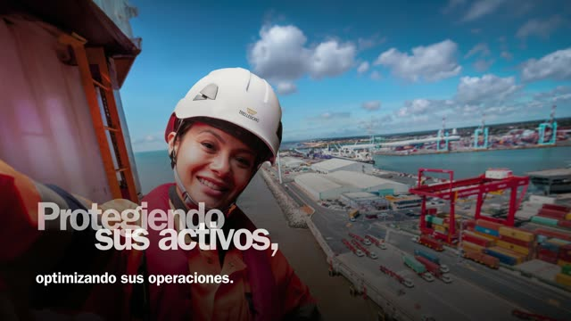
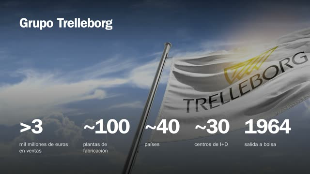
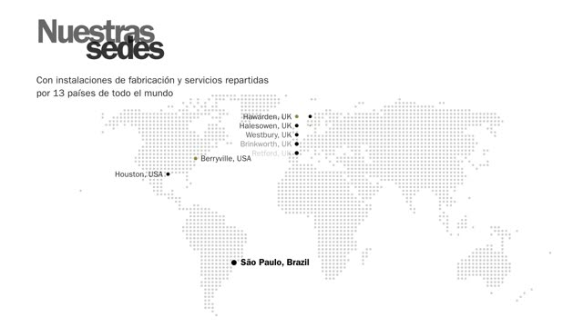
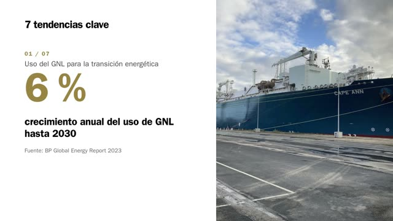
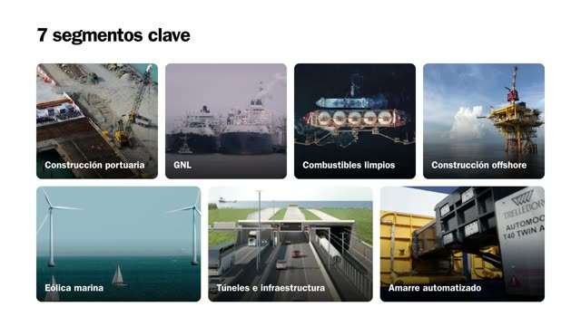
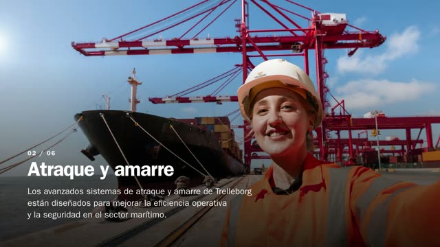
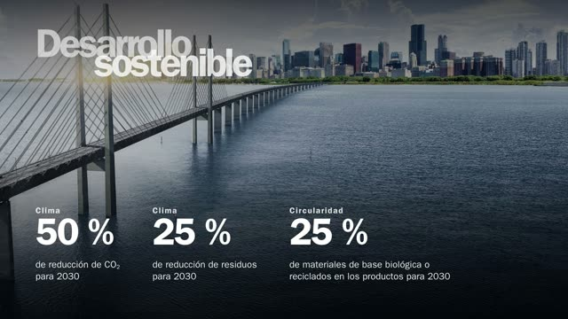
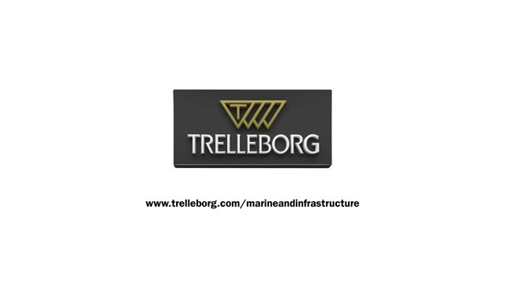
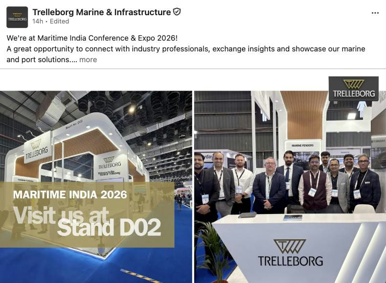

Corporate and AI video
A Spanish corporate film, built in-house to the brand book.
The LATAM corporate profile is my latest film: 2:36, 16 scenes, made with HyperFrames, ffmpeg and Claude, and checked against a 298-page brand guideline before every export.
Perfil corporativo LATAM
- 2:36
- 16 scenes
- Spanish (LATAM)
- On-screen text, no voice-over
- Licensed music, cut on the downbeat
- 1920×1080
- For YouTube, the website and presentations
Storyboard
Nine of the sixteen scenes. Every figure on screen traces back to the company deck or the Spanish company profile.








How it was made
Script from approved messaging
Key messages used word for word; figures taken from the company overview deck and the Spanish company profile.
Translate and flag
Spanish on-screen text with regional number style, and every judgement call (long-scale billions, industry terms) listed for review in-market.
Build as code
Sixteen scenes composed in HyperFrames, with the signature two-row overlapping headline once per scene and every cut landing on a bar downbeat.
Brand check
The brand guideline distilled into a checklist: 3D logo only and never animated, white intro and outro cards, sentence-case text.
Render and deliver
1920×1080 H.264 for YouTube, the website and presentations to public-sector bodies.
Event and product reels
One edit, rendered to every format a channel needs: 9:16, 16:9, 1:1 and 4:5.


Brand rules, built in
Logo
Official 3D logo file only, never redrawn, animated or restyled. Clear space set from the triangle height.
Social frame
White top band and top-right logo on every social cut, so the brand travels when a post is shared.
Type
Franklin Gothic, sentence case, and the two-row overlapping headline used once per scene.